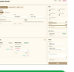

Obezite, günümüzde bireylerin yaşam kalitesini olumsuz etkileyen önemli sağlık sorunları arasında yer almaktadır. Bu sorunların çözümünde takip ve uzman desteği büyük önem taşımaktadır.
Bu amaçla geliştirilen SmartDiet, diyetisyen ve danışan arasındaki iletişim ve takip süreçlerini dijital ortama taşıyan web tabanlı bir sistemdir. Uygulama; randevu yönetimi, diyet planı oluşturma, öğün ve su takibi, ölçüm kayıtları ile mesajlaşma gibi işlevleri destekleyerek süreçlerin daha düzenli ve verimli şekilde yürütülmesini sağlamaktadır.
SmartDiet, diyet planlama, takip ve iletişim süreçlerini dijital ortama taşıyan bütünleşik bir platform olarak geliştirilmiştir. Sistem; ölçüm, öğün, su tüketimi verilerinin düzenli takibini sağlarken, yapay zekâ destekli asistan ile kullanıcı deneyimini zenginleştirmektedir.
Sonuç olarak proje; diyetisyen ve danışan arasındaki etkileşimi güçlendiren, veriye dayalı ve sürdürülebilir bir beslenme yönetimi altyapısı sunmaktadır. SmartDiet, dijitalleşen beslenme süreçlerini veriye dayalı olarak yönetir, uyum takibini kolaylaştırır ve kişiye özel rehberlik desteği sağlar. Bu sayede kişilerin obezite ile mücadelesinde etkin rol oynar.
Sistem, kullanıcıların kayıt, giriş ve rol tabanlı yetkilendirme işlemlerini yönetmek amacıyla NestJS tabanlı bir backend mimarisi ile geliştirilmiştir. Veriler; kullanıcı profilleri, diyetisyen-danışan eşleşmeleri, diyet planları, öğün takipleri ve ölçüm kayıtları için PostgreSQL veritabanında saklanmaktadır. Arayüz ise React tabanlı modern frontend mimarisi üzerinde kurgulanmıştır.
| Veri Türü | Açıklama | Kaynak | Kullanım Amacı |
|---|---|---|---|
| Öğün Verileri | Planlanan ve Tamamlanan Öğünler | Diyet Planı | Uyum analizi ve günlük takip |
| Ölçüm Verileri | Kilo, vücut ölçüleri ve diğer değerler | Ölçüm Takibi | İlerleme ve değişim analizi |
| Su Tüketimi | Günlük su tüketim miktarı | Su Takibi | Yaşam tarzı ve alışkanlık analizi |
| İletişim Verileri | Mesajlar ve diyetisyen etkileşimleri | Mesajlaşma | İletişim kalitesi ve yanıt takibi |
| Randevu Bilgileri | Randevu kayıtları ve durumları | Randevu Yönetimi | Planlama ve süreç yönetimi |
